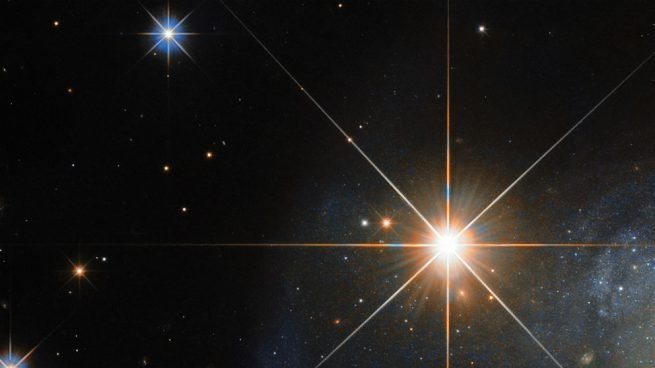

Una estrella (del latín: stella) es un esferoide luminoso de plasma que mantiene su forma gracias a su propia gravedad. La estrella más cercana a la Tierra es el Sol.1 Otras estrellas son visibles a simple vista desde la Tierra durante la noche, apareciendo como una diversidad de puntos luminosos fijos en el cielo debido a su inmensa distancia de la misma.2 Históricamente, las estrellas más prominentes fueron agrupadas en constelaciones y asterismos, y las más brillantes fueron denominadas con nombres propios.
Los astrónomos han recopilado un extenso catálogo, proporcionando a las estrellas designaciones estandarizadas. Sin embargo, la mayoría de las estrellas en el Universo, incluyendo todas las que están fuera de nuestra galaxia, la Vía Láctea, son invisibles a simple vista desde la Tierra. De hecho, la mayoría son invisibles desde nuestro planeta incluso a través de los telescopios de gran potencia.
Durante al menos una parte de su vida, una estrella brilla debido a la fusión termonuclear del hidrógeno en helio en su núcleo, que libera energía la cual atraviesa el interior de la estrella y, después, se irradia hacia el espacio exterior. Casi todos los elementos naturales más pesados que el helio se crean por nucleosíntesis estelar durante la vida de la estrella y, en algunas de ellas, por nucleosíntesis de supernova cuando explotan. Cerca del final de su vida una estrella también puede contener materia degenerada. Los astrónomos pueden determinar la masa, edad, metalicidad (composición química) y muchas otras propiedades de las estrellas mediante la observación de su movimiento a través del espacio, su luminosidad y espectro, respectivamente. La masa total de una estrella es el principal determinante de su evolución y destino final. Otras características de las estrellas, incluyendo el diámetro y la temperatura, cambian a lo largo de su vida, mientras que el entorno de una estrella afecta a su rotación y movimiento. Una gráfica de dispersión de muchas estrellas que hace referencia a su luminosidad, magnitud absoluta, temperatura superficial y tipo espectral, conocido como el diagrama de Hertzsprung-Russell (Diagrama H-R), permite determinar la edad y el estado evolutivo de una estrella.